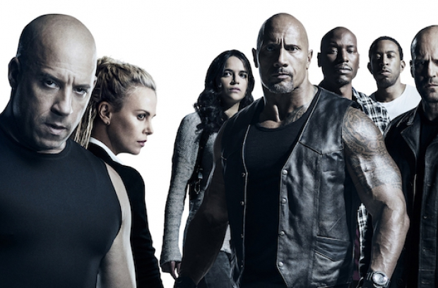
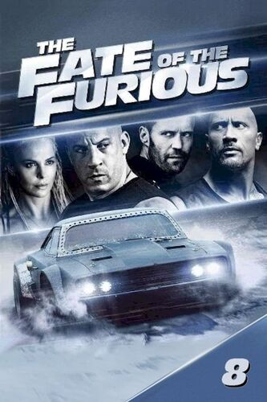
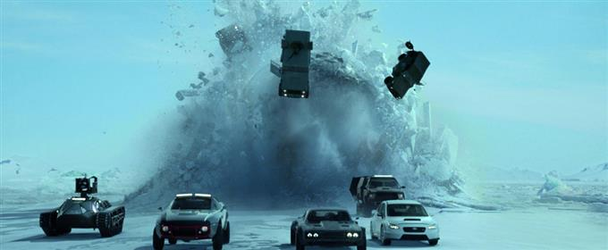

hello
okko
«Форсаж 8» — американський фільм-екшн, знятий Феліксом Гері Греєм. Він є продовженням фільму
«Форсаж 7» і восьмим фільмом у серії «Форсаж». Прем'єра стрічки в Україні відбулася 13
квітня 2017 року. Фільм розповідає про Домініка Торетто, який зраджує власну сім'ю й команду. Вікіпедія
Дата випуску: 13 квітня 2017 р. (Україна)
Режисер: Фелікс Гері Грей
Квиткова каса: 1,239 мільярда USD
Касові збори: $ 1 102 910 793
Композитор: Браян Тайлер
відомі люди
 гарні моменти

подивитись
hello
helo
hello
hello